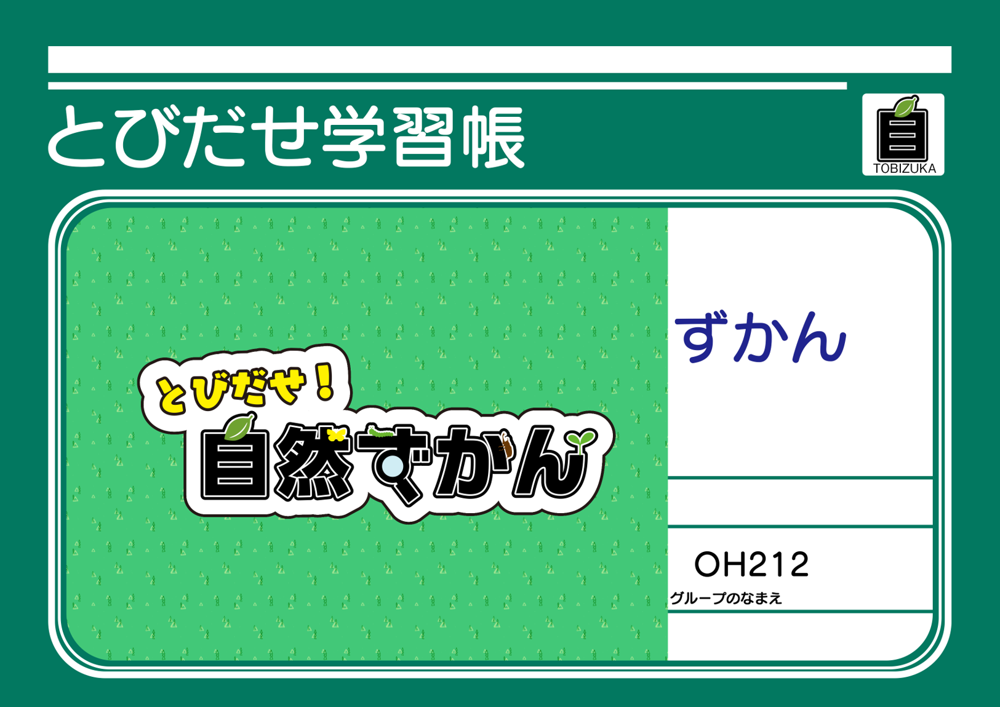

現代の子供たちはデジタルネイティブ化が 進行し”興味や知りたい”を簡単に自分で 調べる事ができるようになりました。 しかしその半面、 外出する機会が少なってきています。 デジタルネイティブ化で、 子供たちが簡単に学習する事ができる事は非常に 良いことですが、 やはり「触れて、感じて」「学習、成長」するこ とも大切です。

触れて、感じてもらう学習方法と、デジタルでの学習の双方の良いところを Mixする新たな教科書を提案します。 今後の教育現場でのデジタル浸透にも、マッチしていると言えます。
私たちが提案する、「とびだせ！自然ずかん」 を通じてデジタルコンテンツから 自然への興味を持ってもらい、 これをキッカケに現実の自然にも興味を 持ってもらいます。 デジタルとリアルの双方の良さを 兼ね備えた学習システムが、 私たちが作る とびだせ！自然ずかんです。

ユーザーが撮影した写真を どんな動物か自動で判断します。 又、撮影した自然はユーザーのズカンに 登録され、登録された自然は いつでも確認する事ができます。
トリコムで登録した自然をいつでも 確認する事ができます。 又、ユーザーが撮影したオリジナルの 写真も登録する事ができ、 オリジナルの写真も登録する事ができます。
WebGLを活用したバーチャルな世界です。 ズカンに登録したあなたの自然を ここで観察する事ができます。
ユーザーの友達を登録する事ができます。 友達登録したユーザーは、 お互いにハコミルを閲覧する事ができる ようになります。
私たちが開発する、「とびだせ！自然ずかん」でミライの子供たちは デジタル化の進行と共に 自然とも寄り添った学習をする事が 可能になります。 つまり、子供たちはデジタルと共に、 自然へ飛び出していくのです。